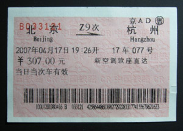
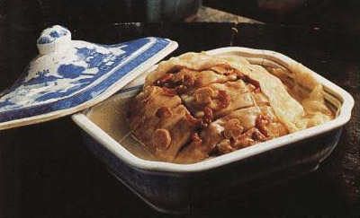
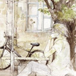

两年・杭州 [置顶]
(2009-04-17 21:52)
看到我一直都没用的那个钱包里夹着的车票，才想起两年前――也就是07年的今天，晚上，7点26分，我在北京站登上开赴杭州的Z9，怀揣着江南的梦想，夜色中驶向杭州。一夜激动，带着那本看了无数遍的《中国国家地理》07年三月号江南专刊，带着对江南风物的美好期待，带着楠哥借给我的相机，带着跟着我走了大半个中国的书包，带着对西子湖的憧憬，一路向南。下边这张图片就是当年的车票，两年过去了，依然如新，记得当时我是想了很久才决定坐Z字头的车的，因为Z字头比普快几乎贵了一倍，但为了能多在杭州呆一天，我还是毅然买了Z字头的票。这张票还不错，我是说车号和位置，我最喜欢的数字是7，座位正好是17车77号，非常中意。

吃鱼
(2009-06-17 22:52)
就像柳永那句著名的“三秋桂子，十里荷花”让金主顿生投鞭渡江之意，高晓声的一篇很江苏的《家乡鱼水情》（好像其实是收录了他几篇写鱼的文章汇总，记得好像包括喧闹的沟梢篇，鱼群闹草塘篇，静静的蒲沟篇，黄鱼专（��鱼）篇，黑鱼篇，鲫鱼篇等吧）让我找到了一种很爱鱼很吃鱼的感觉――想起汪曾祺写《故乡的野菜》了（似乎还看过一篇周作人的野菜），什么荠菜、马齿苋、莼菜、蒌蒿、枸杞头，如数家珍，因为我也喜欢什邡的野菜，喜欢那丝丝微苦的清香，所以也是看得口水ing――扯远了。。还是回到鱼，记得似乎从小就喜欢吃鱼，父亲归结我喜欢吃鱼的根源时说是因为母亲在生我的前几个小时一个人吃了一条很大的红鲤鱼，这个证据比较无力，但似乎是唯一能找到的渊源。

个人档案

昵称：zouxin
位置：四川・什邡
个性介绍：跑慢了被穷撵上了，跑快了撵上了穷。。
博客介绍
记得很久以前在一部电视剧中见到过“WaitingBar”，开Bar的老板娘是传说中的白蛇。现在的我好想能进去坐坐，喝一杯心酒，和她说说话，听听她寻了一千年的断桥绢伞。因为感觉自己也在默默地等一个人，等一些事。我不知道等待的结果如何，只知道应该默默等待。我不知道能否等到理想中的结果，但我知道要做的就是等待，并且也只能是等待，不管是相遇的欣喜，还是转身的可能，抑或是擦肩的遗憾，我都会一直默默等待下去，静静地看着其发生，期待着细水长流的也许。或许有些想法过于孩子气，并且现实和理想之间肯定是有距离的，但我相信上天是公允的，有时YY一下心诚则灵也不是不可以：既然是一直倾心等待的，结局就一定会是美好的：）